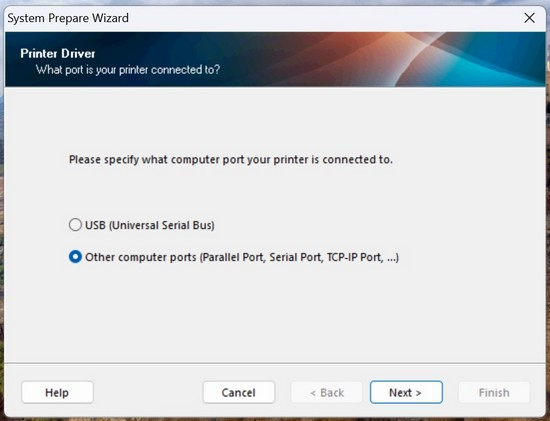
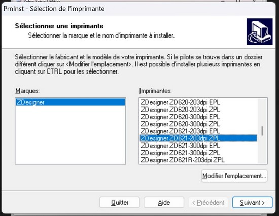
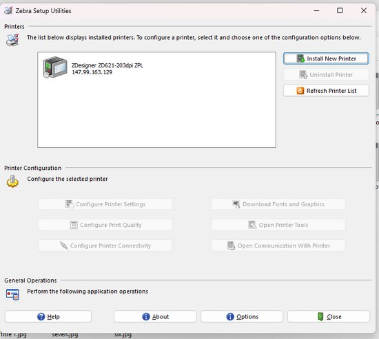
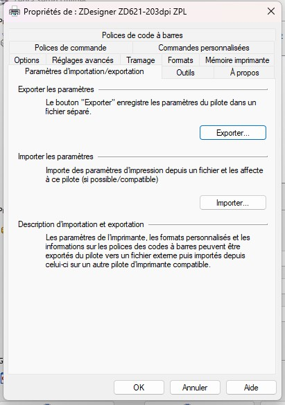

Télécharger et installer Zebra setup utilities :
https://www.zebra.com/gb/en/support-downloads/software/printer-software/printer-setup-utilities.html
Faites suivant jusqu'à l'écran :

et choisissez Othe / Autre
Indiquez l'adresse 147.99.163.129 et laissez le port 9100
Puis suivant jusqu'à obtenir l'écran de la sélection de l'imprimante et sélectionnez : Designer ZD621-203dpi ZPL

Une fois l'imprimante installé l'utilitaire : Zebra setup utilities affiche :

Double cliquez sur l'imprimante et sélectionner l'onglet Paramètres d'importation/exportation :

Sélectionner importer et sélectionnez le fichier print.drs
Disponible ici faites (enregsitrez sous) :
FichierC’est fait l'imprimante est installé il vous suffit de lancer Chrome :
A l'impression d'une étiquette :
Sélectionnez l'imprimante Designer:

Voilà c'est installé